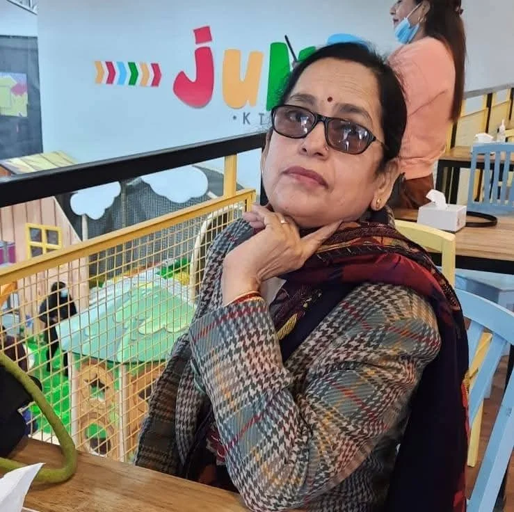
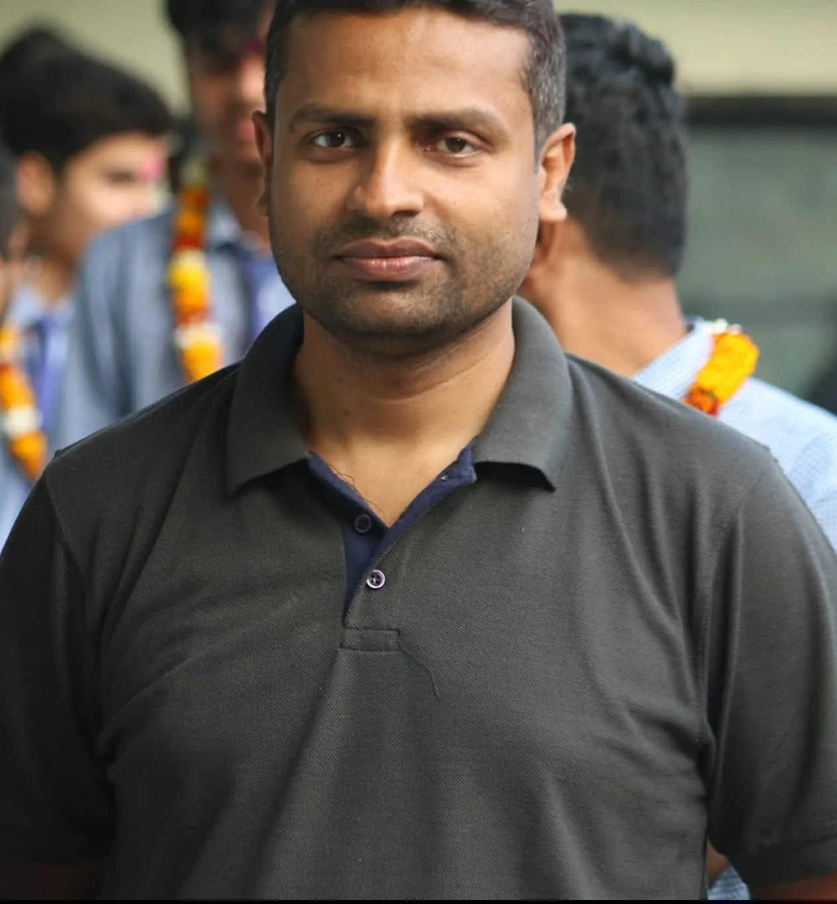
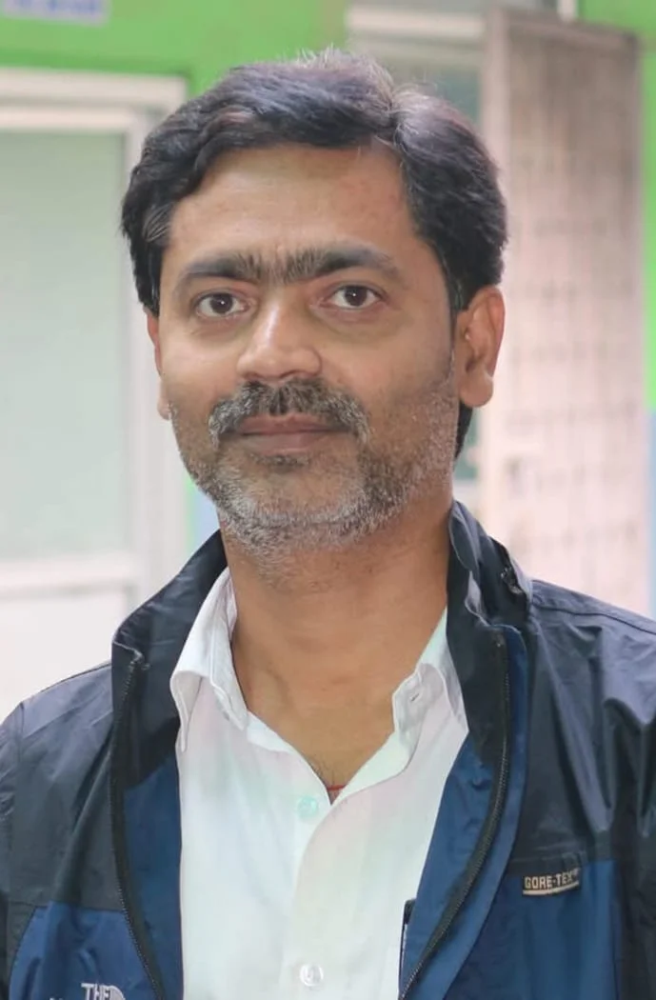
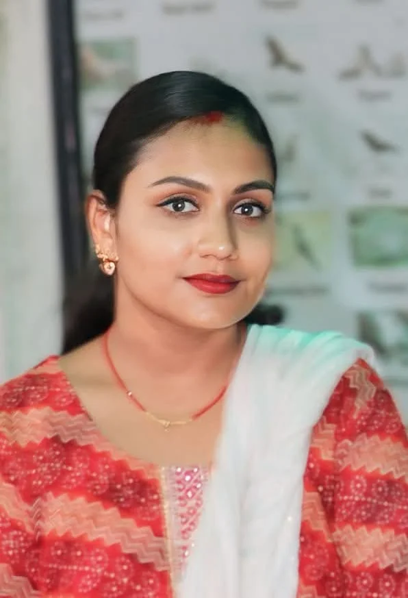
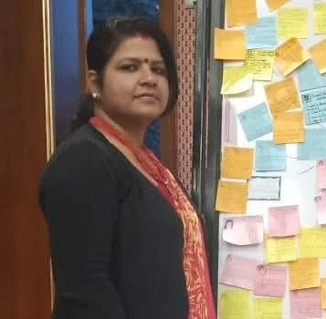
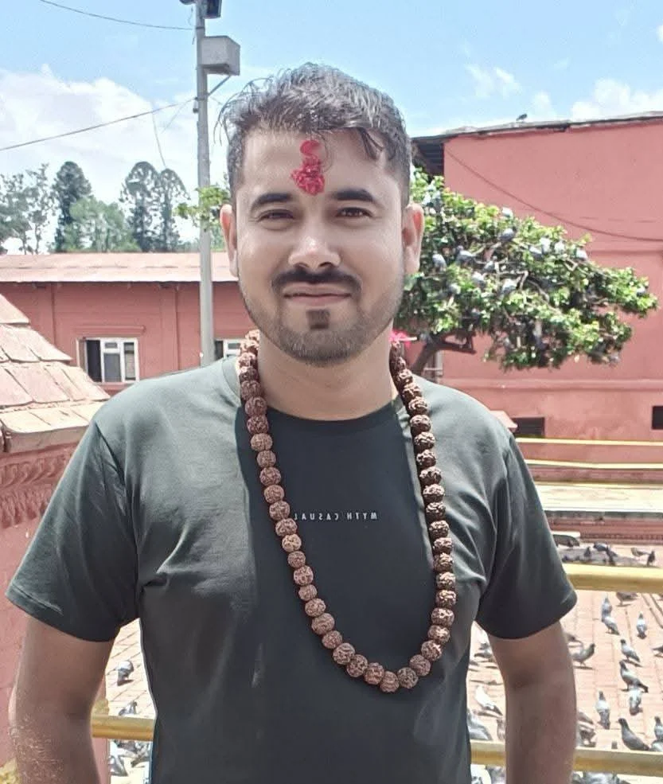

Dr. Veena Thakur
PRINCIPAL
She is strict, no doubt. But the kind of strict that actually wants the school to grow.
Whenever she walks in for inspection, the whole class suddenly becomes the "quitest class of the school😂".
But deep down, she cares about our future and always pushes us to aim higher.
Her appreciation always pushes us and guides us the real way to succeed.
Dr. Rabindra Thakur
DIRECTOR
Sir gives that calm but stressful vibe.
He doesnot always catches us, but when he does,
either your fee is unpaid, or your hair is to messy.😂
Still cares for us alot..
Pawan Jha Sir
MATHEMATICS TEACHER
Maths with him is either pure genius or pure panic.
He explains in a way that actually makes sense and also make us enjoy maths,
but if you don’t do homework… He slays a dialogue on you "Yee behuda haru😂, Ali ta padhi hal"
Still, he’s one of those teachers who actually wants you to understand, not just memorize.

Sourav Singh Rajput Sir
SCIENCE TEACHER
Sometimes serious, sometimes fun, but always explaining things properly.
"Aee mula😂", one of his favourite dialogue
His way of teaching makes science feel less scary and more interesting. But his exam questions do scares us a lot.
And practical classes with him? Elite moments.

Sudip Panday Sir
OPTIONAL MATHEMATICS
Optional maths is already tough, and then he comes with next-level questions.
But honestly, he pushes us to think deeper. He doesn’t spoon-feed answers.
If you survive his class, you can survive anything. The trigonometry and cordinates one specifically.😂
Don't dare to challenge him, once Aarav did, then sir did a equation with 7 different meathods.☠️

Ambika Ray Mam
COORDINATOR
The one who manages everything behind the scenes.
Calling at homes for mid day school off, absent guys, whole day busy because of juniors.
Still, she always keeps things organized.

Ritu Tiwary Mam
CLASS TEACHER / ENGLISH
She knows the class too well. Like… too well.
English periods with her are actually interesting, and she makes us participate instead of just sitting silently.
As a class teacher, she balances strictness and care perfectly.
And one of her favourite dialogur, "Its my fault I gave you too much liberty" because we shout alot.😂
Still cares us alot.❤️
Rahul Jha Sir
MOTIVATOR & COMPETITION TRAINER
He doesn’t come daily, but when he comes, energy changes.
Helps us prepare for speeches, anchoring, and big competitions.
Makes practice fun instead of stressful.
One of those teachers who boosts confidence instantly.
He is like, We don't come always, but when we come, we do our best.😅
Still, always there for us, to support us ❤️
Manoj Bharti Sir
COMPUTER TEACHER
Still remember the Practical exams with sir.
Teaches properly but also understands that half of us are not understanding, stil if we ask, he teaches us again with same energy.⚡
His classes are chill but informative. And yes, he knows when we’re pretending to work.😅
His Sanskrit shlokas are like best, really. ✨. One of our best teacher.
Ravi Chandra Lal Karn Sir
ACCOUNT TEACHER
He is the most energetic teacher e had ever seen.⚡
Accounts is not easy, but he tries to make it simple.
He explains step by step and repeats if needed.
His balance sheets and bank vouchers are still in our minds.
Teaches us in a way, we get more interest towards listening his words.✨
You can tell he really wants students to actually understand debit-credit properly.
Rakesh Sir
COMPUTER ROOM INCHARGE
If something in the lab isn’t working, he’s the man.👨🦰
Always handling wires, systems, printers — basically keeping the tech world of our school alive.
Silent worker but very important for smooth practical days.❤️
Previously he used to teach us, his teaching skills are also next level. ⚡☠️
Mukesh Mandal Sir
SOCIAL STUDIES
Uhh, I remember the sleepiness i get during social classes. 😅
History and civics are boring, but he adds real-life examples that make it more understandable.
He teaches in a straightforward way.
If you listen properly, exams become much easier. But if not, in exams the questions wil go from above your head.😂
Sanjeev Sharma Sir
MORAL SCIENCE & Extra Activities INCHARGE
Not just a teacher — more like a motivator. 👨🦰
Whether it’s moral science, competitions, or extracurricular activities,
he pushes students to come forward. ✨
He actually believes in hidden talents and tries to bring them out.
Because of him I realized that I can do great in quiz competitions.⚡
Yagya Prasad Acharya Sir
NEPALI TEACHER
The reason for our fluent vocals in Nepali.✨
His Nepali classes feel traditional but meaningful.
And don't even try to change your place in his class, eles, you are finish.😅
I stil remember his favourite dialogue, " Aee Shanti" to make the class silent.😂
Accountant Sir(Baba)
FINANCE HEAD
You mostly see him near office work, handling fees and financial stuff.
Quiet but important. The school’s financial backbone. ☠️
Without him, nothing would run smoothly.
Most trust worthy person of school and very simple living person.✨

Amit Permarsi Sir
COMPUTER ROOM CO-INCHARGE
FIlling and sumbitting forms, questions, printing, and everything tech-related in the background.🤖
Always busy. If something needs to be managed digitally, he’s already on it.⚡